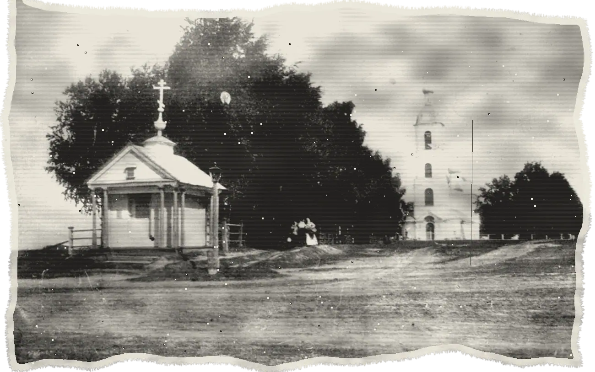

VOL. II · PLATE Q · 05 / 06
THE VANISHED VILLAGE
Flooded towns, uncounted graves and the villages that simply empty
Villages leave the map in two ways: the state floods them, or people leave. The Rybinsk Reservoir covered a town and hundreds of villages; the census records thousands of villages with no residents at all. The plate puts the two side by side and says what is and is not known about the dead who stayed.
Flooding 1937–1947; census 2002–2010 · Rybinsk Reservoir (Yaroslavl, Vologda and Tver oblasts); Russian Federation (census) · Soviet infrastructure and rural depopulation
Q / 01
Water over the village
E. A. Filatova’s 2026 planning article gives context figures for the Rybinsk and Uglich reservoirs on the Upper Volga: more than 300,000 hectares of fields, meadows and forest flooded, more than forty churches, three monasteries, about seven hundred villages and hamlets, and six towns, among them Mologa and Korcheva.
The article proposes lowering the reservoir to restore settlements, so it argues a case. In the part read, the figures carry no primary citation and there are no figures for graves or cemeteries.

Q / 02
Resettlement by decree
I. Tsipileva’s article, written on Cherepovets district, states that resettlement followed a decree of the All-Russian Central Executive Committee and the Council of People’s Commissars of 1 August 1936, and that the residents of about seven hundred villages and hamlets were moved from the flood zone.
Only the opening of the article was seen, and its year of first publication is not shown. The decree is a dated document that a reader can look for. The article’s own focus is one district.

Q / 03
The cemeteries under the water
A news feature published by RAPSI on 13 July 2026 says that the sanitary preparation of the reservoir bed was meant to include moving cemeteries, that in practice only some churchyards were moved in the 1930s and 1940s, and that many cemeteries of the Mologa area went under the water with their villages. It adds that estimates of the number resettled run from 100,000 to 130,000 and that historians dispute how they were counted.
This is unverified. The page could not be fetched, the lines were read in a search excerpt, and the excerpt cites no records. The plate treats it as a lead: the transfer of burials in the flood zone should be in archival files, and it is not in the sources read for this plate.
Q / 04
Two ways a village disappears
| Source | Cause | Figure given | Status |
|---|---|---|---|
| Filatova, 2026 | Flooding, Rybinsk and Uglich reservoirs | about 700 villages and hamlets | Planning article; no primary citation seen |
| Tsipileva, n.d. | Flooding, resettlement decree of 1936 | about 700 villages and hamlets | Excerpt of the opening only |
| RAPSI, 2026 | Flooding; Mologa and cemeteries | 100,000–130,000 resettled (disputed) | Unverified; read in an excerpt |
| TASS on the 2010 census | Emptying, not flooding | 19,400 villages without inhabitants | Report of the census report; 48% more than at the previous census |
Apparatus sources · related plates · terms
Sources for this plate
- filatova2026 Filatova, E. A. — Градостроительная ревитализация затопленных территорий Верхнего Поволжья (2026)
- tsipileva2014 Tsipileva, I. — О переселении жителей Череповецкого района из зоны затопления в связи с образованием Рыбинского водохранилища (n.d.)
- rapsi2026 RAPSI (rapsinews.ru), unsigned in the excerpt — Material marking the 85th anniversary of the filling of the Rybinsk Reservoir (headline not captured) (2026)
- tass2011-census TASS (Itar-Tass) — Russia’s population stands at 142,857,000 people, aged 39 on average (report on the official 2010 census results) (2011)
- osw2011-census Centre for Eastern Studies (OSW), Warsaw — The results of the 2010 census – a deepening demographic crisis in Russia (2011)
- rte2011-villages RTE (Raidió Teilifís Éireann), news report — Towns, villages a dying phenomenon in Russia (2011)
URLs, access dates and limitations are in the bibliography.